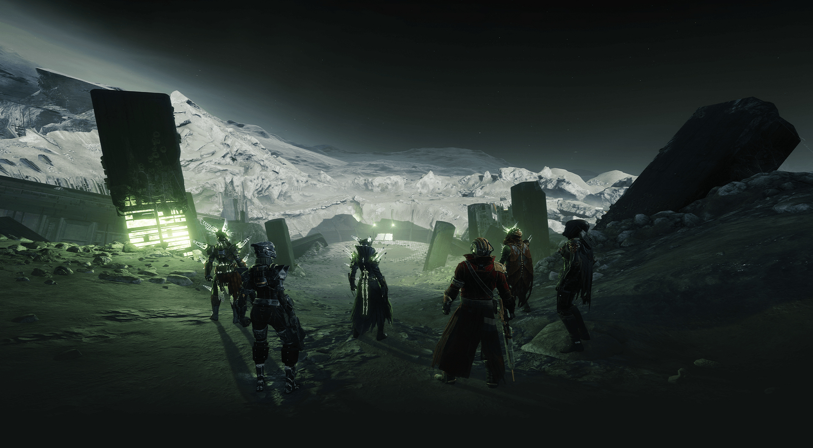

<div class="content"> 
    <h1>Welcome to My End Game Guide</h1>
    <div class="intro">
        <h2>What is this?</h2>
        <h4>This is the beginning of a multipurpose end game guide for Destiny 2 
            players. Destiny 2 is a somewhat complicated game when it comes to
            the end game content it has to provide. The weapons and armor you 
            carry with you into it dictates how easy or hard what you come across
            will be.
            <br><br>
            Firstly, I will have an end game checklist for weapons that are either 
            must-haves or some that are use specific. There are almost 100 weapons
            on this list so collecting them will take some time.
            <br><br>
            There is also tier list of most of the weapon perks in the game that
            you will come across. Some are definitely better than others and you
            will get used to differentiating between all of them in no time. 
            <br><br>
            I will have a DPS calculator with will essentially calculate the amount
            of damage that you do during a single-mag. This will give you an idea of
            which perks will be better for burst damage. Eventually, I will update 
            this calculator to show the amount of total damage for those encounters
            that are longer than your usual burst dps use cases.
            <br><br>
            Lastly, I will provide a page with all of the links that I use on a day
            to day basis alongside Destiny 2. Destiny 2 is a large game with a lot of 
            components to it. It can get rather complicated and these tools ease the 
            stress of all of these components coming together!
        </h4>
    </div>
</div>
